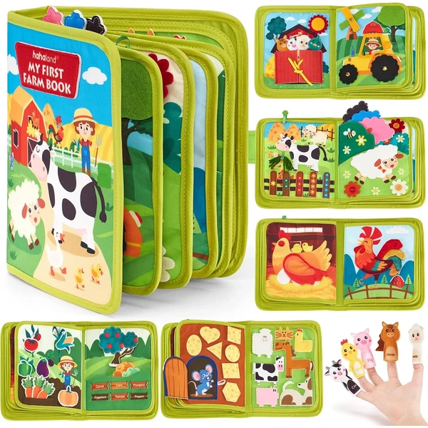

👶 1 año
Busy book Montessori granja hahaland
Un libro de actividades con diez páginas temáticas de granja (contar huevos, sonidos, clasificar frutas...) pensado para el aprendizaje a través del juego. Tela gruesa y bordes curvados sin filos.
⭐
¿Por qué nos gusta?
- ✔Diez páginas con actividades distintas.
- ✔Tela resistente y bordes seguros.
- ✔Tamaño compacto para viajes.
💬
Lo que más destacan las familias
Entre las familias que lo tienen se comenta que las actividades de contar y clasificar mantienen la atención de los niños más tiempo del esperado. También gusta que la tela sea resistente, porque aguanta bien el uso diario y los tirones.